At Peloton, I partnered with engineering and application security subject matter experts to develop a secure software development education program that helped software engineers build security and privacy considerations into every stage of the development lifecycle.
Rather than presenting security as a final review or compliance checkpoint, the program emphasized secure development as an integral part of everyday engineering practice. Learning experiences covered topics including secure coding, threat modeling, code review, vulnerability management, Privacy by Design, authentication, encryption, and incident response. The curriculum combined technical instruction, practical examples, and scenario-based learning to help engineering teams identify potential risks earlier, make informed security decisions, and contribute to the development of more resilient software products.
The examples below represent a selection of the learning experiences, instructional materials, and supporting assets developed as part of Peloton's broader engineering security enablement program.
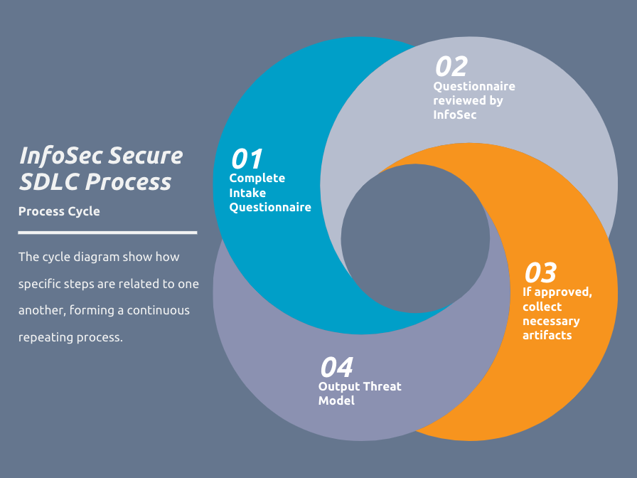
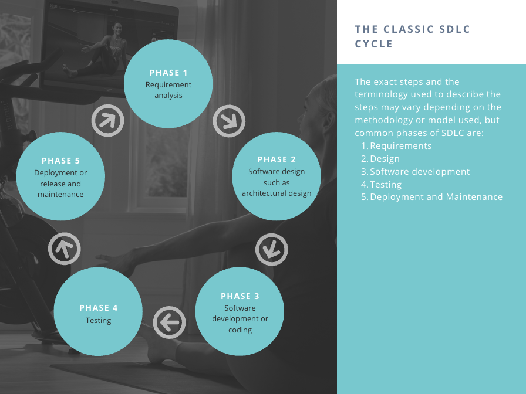
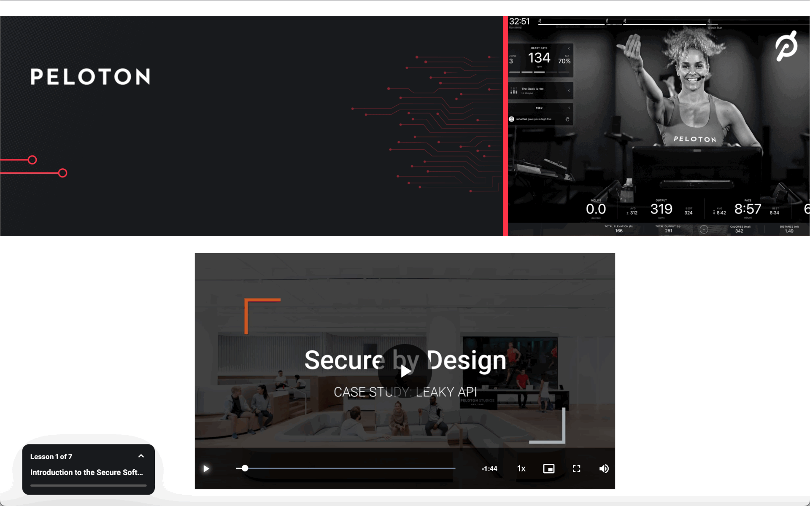
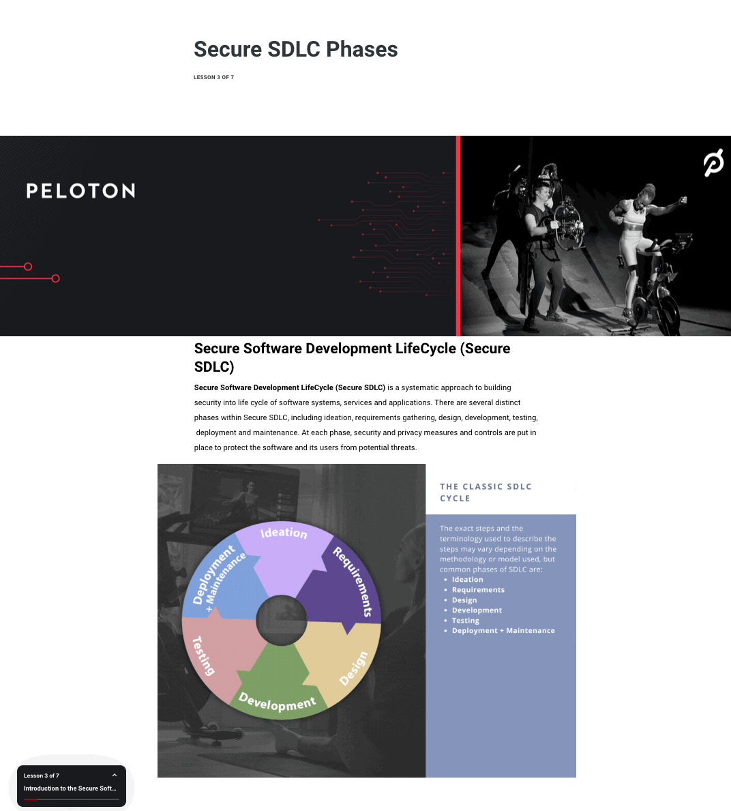
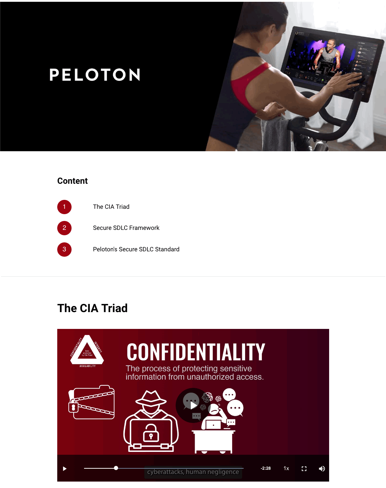
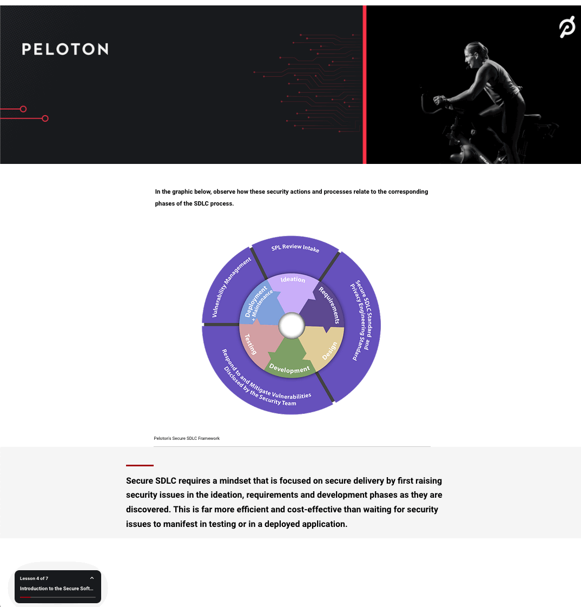
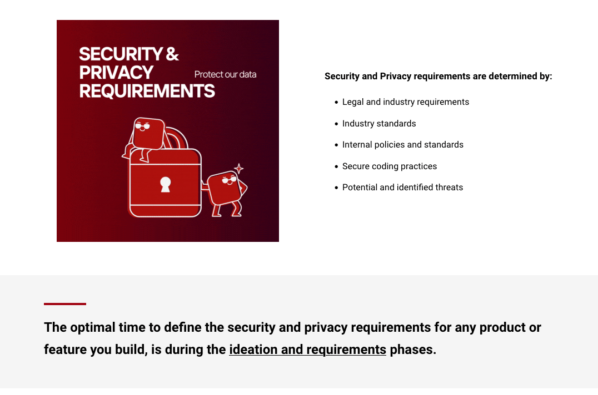
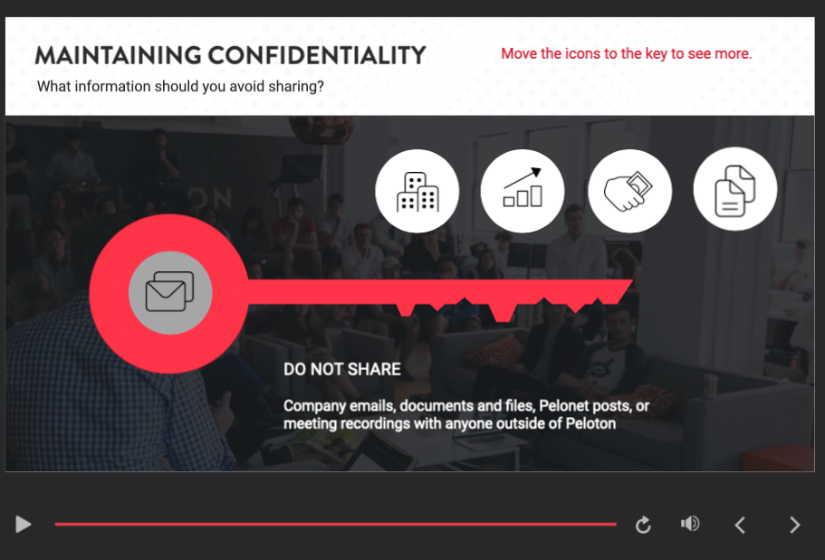
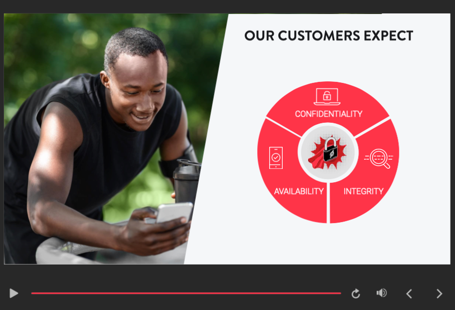
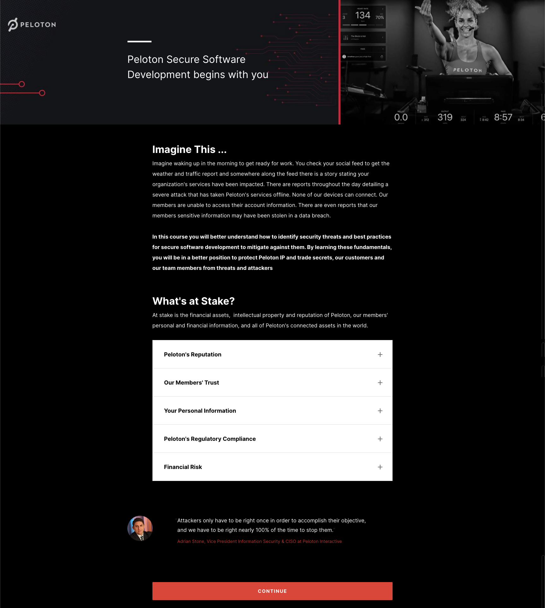
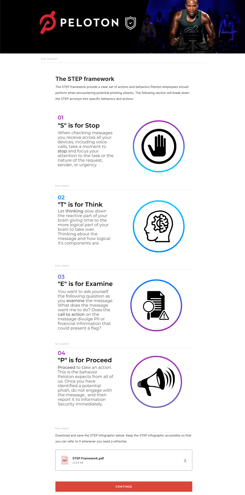
Related Case Study
Developer Certification & Technical Enablement
Technical audiences needed clearer pathways into platform development, product analytics, and internal process knowledge.